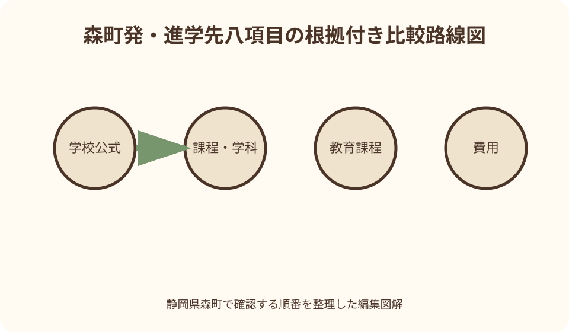
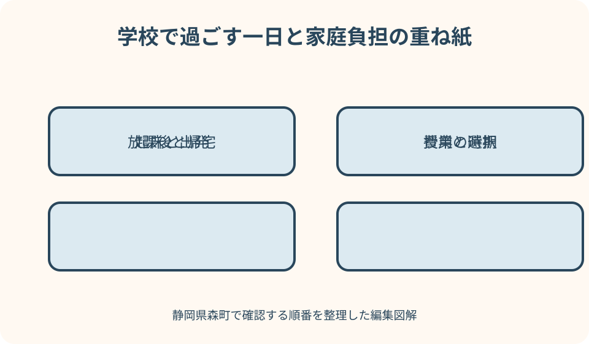

学校・就学・家庭記録｜最終確認 2026-08-10
静岡県森町から進学先を調べる家庭の情報整理｜学校公式・費用・通学を同じ表で確認
進学先の情報は、学校案内、学科紹介、教育課程、費用資料、説明会、入試要領と別々の場所にあります。一つのパンフレットや口コミだけで決めると、対象年度や課程、学科が違う情報を混ぜかねません。本稿では、森町から通う生活を想定しながら、同じ項目と根拠欄で候補を調べ、本人の希望を順位や偏差値だけに押し込めない記録方法をまとめます。

編集イラスト結論：進学先調べは学校ランキングではなく、本人の一日を確かめる作業
進学先を調べる目的は、候補校を一つの点数で並べることではありません。本人が何を学びたいか、朝から夕方までどう過ごすか、家庭が費用と移動を支えられるか、困ったときにどこへ相談できるかを具体化することです。同じ表を使っても、最後の答えは家庭ごとに異なります。
学校の知名度、進学実績、口コミの一項目だけでは、学科、課程、授業、資格、学校行事、通学の実態は分かりません。公式資料で事実を確かめ、説明会で本人が感じたことを別欄に置きます。事実と印象を混ぜなければ、家族の意見が違っても話し合えます。
静岡県教育委員会の高校教育課ページには、公立高校入学者選抜に関する当該年度資料や学校情報への入口があります。入試の日程や方法は年度ごとに確認し、過年度の要領、塾のまとめ、検索結果の抜粋を今年の条件として使いません。
本稿の確認日は2026年8月10日です。学校名、学科、募集、説明会、交通、費用、支援制度は変わる可能性があります。出願や支払に関わる情報は、実行時に学校公式、静岡県教育委員会、在籍中学校など指定された窓口で再確認してください。
最初の一枚：候補校を同じ八項目で並べる
比較ノートの列は、学校公式、課程・学科、教育課程、費用、通学、説明会、本人希望、出願年度の八つにします。行には候補校を置きます。学校名だけでなく、全日制、定時制、通信制など課程と、志望する学科・コースを一組にします。
各事実の横には、URL、資料名、発行年度、確認日を記す根拠欄を置きます。「友人が言っていた」「昨年はこうだった」という情報は参考欄へ分け、未確認印を付けます。空欄があることは失敗ではなく、次に学校へ尋ねる質問が見えた状態です。
表の右端に順位は設けません。代わりに、本人が魅力を感じた点、心配な点、家庭が確認する点、次の期限を置きます。魅力と心配は同時にあってよく、一回の説明会で結論を出す必要はありません。
候補が多い場合は、最初から全項目を埋めず、学校公式、学科、通学の三列で一次確認します。本人の関心と通学可能性が残った候補について、費用や説明会を詳しく調べます。ただし、早い段階の除外理由も記録し、誤情報なら戻せるようにします。
森町の公式入口：在籍校、学校教育課、公共交通を役割分けする
森町公式の学校教育課ページは、町の学校教育に関する担当を確かめる入口です。進路指導の具体的な面談や出願準備は、まず在籍中学校が示す流れを確認します。町担当と学校の役割を家庭だけで決めず、質問の内容を伝えて適切な窓口へつないでもらいます。
森町公式の小・中学校案内から、在籍校や町内学校の公式な入口を確認できます。進路情報は学校配信、面談資料、学年だよりなどで届くことがあるため、ウェブだけで完結させません。本人へ渡された紙も発行日と提出期限を付けて保存します。
森町の公共交通案内は、町内移動を調べる出発点になります。ただし、通学先までの全経路、学期中の時刻、定期券、遅延時の扱いを保証する資料ではありません。鉄道・バス事業者の最新時刻と学校の始業・終業を合わせて確認します。
町の交通会議資料には、通学を含む移動需要に関する記載がある場合があります。これは個人の通学経路を認定する資料ではありません。森町で暮らす背景情報と、本人が毎日使う具体的な便・乗換・徒歩区間を別の資料として扱います。
学校公式：トップページだけでなく、対象年度の資料へ進む
学校名を検索したら、設置者、所在地、公式ドメインを確かめます。同じ名称の学校、まとめサイト、広告が並ぶことがあります。県立学校は県の学校サイト、市立・私立は設置者や学校の公式ページなど、発信元を確認してURLを表へ入れます。
トップページの紹介文は学校の目標や特色を知る入口ですが、学科の科目、費用、出願条件の全ては載りません。中学生向け学校案内、教育課程、入試情報、費用、行事、アクセスへ分けて開きます。各ページの更新日と対象入学生年度を記録します。
PDFを保存するときは、ファイル名に学校名、資料名、対象年度、保存日を入れます。ブラウザのタブ名だけでは古い案内と区別できません。差し替え後も旧版が端末に残ることがあるため、出願前には公式ページから最新版を開き直します。
公式SNSは学校生活の雰囲気を知る補助になりますが、入試要領や費用の確定資料とは限りません。短い投稿にない条件を推測せず、投稿からリンクされた正式文書へ戻ります。動画の印象と、本人が必要とする学び・支援を別欄にします。
課程と学科：名称ではなく、学ぶ時間と卒業までの形を見る
全日制、定時制、通信制などの課程は、登校時刻、学び方、修業の進め方が異なります。同じ学校名でも課程が違えば、説明会、募集、通学の条件も変わる場合があります。比較表では学校名の下に課程を必ず書きます。
普通科、専門学科、総合学科などの名称だけで授業内容を決めつけません。学校公式の学科紹介、教育課程表、科目選択、実習、資格、進級・卒業に関する案内を確認します。「将来に強い」といった抽象語ではなく、本人が学ぶ具体的な科目へ置き換えます。
コースや類型が入学時に決まるのか、入学後に選ぶのかも重要です。希望者数、成績、人数などに条件がある場合、希望すれば必ず選べるとは限りません。説明会では、選択時期と決定方法を質問し、回答日を記録します。
転科、転籍、単位の扱いなど将来の変更可能性は、家庭の推測で安心材料にしません。制度があっても個別に利用できるとは限らないため、今の本人がその課程と学科で学び続けるイメージを優先し、変更は正式な案内を別途確認します。
教育課程：科目名、選択時期、授業時間を同じ単位で記録する
教育課程表は、学年ごとの科目や単位、選択の構造を確認する資料です。表の見た目が学校ごとに違うため、総科目数だけで比べません。本人が関心のある科目、必履修、選択、実習、探究、資格に関係する授業を抜き出します。
科目名が似ていても内容は同じとは限りません。学校案内、シラバス、説明会で、何をどう学ぶか、実験や実習がどの程度あるかを確かめます。進路実績から授業内容を逆算せず、公式に示された教育課程を根拠にします。
日課表が公開されていれば、始業、授業時間、終業、補習、部活動の時間を通学表へつなぎます。標準の日課と、曜日・行事・季節で変わる日を分けます。毎日同じ電車やバスで帰れるとは限らないため、遅い終了時刻も確認します。
教育課程は入学年度によって変わる場合があります。現在の在校生向け表を、次年度入学生へそのまま当てはめません。志望する入学年度の資料が未公表なら未確認とし、公表時期を学校へ尋ねます。
費用：入学時、毎月、年ごと、任意を分ける
費用欄は一つの合計額ではなく、受検・出願、入学手続、授業料、学校納付、教材・端末、制服・用品、交通、昼食、行事、部活動へ分けます。最初の年だけ必要な物と、毎月・毎年続く物を別にします。
学校案内に掲載された金額は、対象年度と含まれる範囲を確認します。「目安」や「予定」と書かれていれば確定額ではありません。端末、検定、実習、旅行など学科や選択で変わる項目は、表へ幅または未確認と記します。
制服や用品は、指定の有無、購入時期、買い替え、譲渡品の扱いを学校へ確認します。部活動費も競技や参加状況で異なります。費用が読めない項目をゼロと置かず、説明会で質問する欄に移します。
家庭の年間表には、支払時期と金額の根拠を残します。入学直前に集中する費用と、通学定期の更新を同じ月へ置けば資金の波が見えます。ただし、将来の金額や支援の受給を保証する表ではありません。
就学支援：制度名、対象、申請先、年度を別欄にする
高等学校等就学支援金や高校生等奨学給付金などは、名称、対象となる費用、所得等の要件、申請時期、申請先が異なります。授業料が減る制度と、授業料以外を支える給付を一つにまとめず、文部科学省、静岡県、学校の当該年度案内を確認します。
文部科学省は、高校生等への修学支援に関する制度情報を公開しています。法律や制度が変わった年度は特に、古い比較記事の金額を使いません。家庭が対象か、いつ支給されるか、必要書類は何かを学校または案内された窓口へ確認します。
支援を受けられる見込みがあっても、入学時にいったん支払う費用や、対象外の用品がある可能性があります。支給を前提に資金計画を確定せず、申請から結果までの時期、立替の有無、返還条件がある制度かを分けます。
奨学金や貸付は、返済の要否、利息、保証、併用、進学後の手続を確認します。名称に「奨学」があっても給付とは限りません。本人にも将来の負担を年齢に応じて説明し、保護者だけで契約を進めません。
通学：地図上の距離より、平日の往復を実測する
森町の自宅から候補校までの通学は、徒歩、自転車、バス、天竜浜名湖鉄道、JRなど複数の移動を組み合わせる場合があります。地図の所要時間だけで決めず、家を出る時刻から教室到着まで、乗換と待ち時間を含めます。
平日の登校時刻に合わせて一度実測します。休日の説明会は便数や混雑が異なるため、毎日の通学を再現しない場合があります。始業の何分前に着く必要があるか、駅や停留所から校門・教室まで何分かも確かめます。
帰りは通常授業、部活動、面談、試験、短縮日で分けます。一本逃したときの待ち、最終便、暗い区間、雨天の代替、家族の迎え可否を記録します。送迎できる日だけを標準にしません。
運賃と定期券は交通事業者の公式情報で確認し、購入区間、通学証明、更新時期を調べます。ダイヤ改正や運賃変更があるため、説明会時の記録を入学後まで確定情報として使いません。
雨天・遅延・運休：代替経路と連絡方法を候補段階で見る
雨天時に自転車区間を徒歩へ変えると、所要時間が大きく延びます。屋根のある待合、歩道、道路照明、坂、荷物を実際に見ます。晴天の最短時間だけで通学可能と判断しません。
遅延や運休が起きた場合、学校への連絡方法、遅刻の扱い、代替交通は学校と事業者の案内を確認します。家庭の車が常に使えるとは限らないため、迎え担当、連絡不能時、待つ場所を家族で話します。
災害や警報時は、通常の代替経路を使うことが危険な場合があります。川や斜面、冠水しやすい道路など地域の危険情報を別に確認し、学校の休校・下校判断へ従います。通学調査は安全を保証するものではありません。
本人の疲労も記録します。試しに往復した日は、起床、移動、説明会、帰宅後の疲れを本人へ聞きます。一度の体験で三年間続けられると断定せず、冬季、雨天、荷物の多い日を想像して未確認事項を残します。
説明会：見学、体験、入試説明を同じものと考えない
学校説明会、体験入学、授業見学、部活動見学、入試説明は、対象と目的が異なります。申込が必要か、保護者同伴か、対象学年、持ち物、会場、締切を学校公式で確認します。参加しただけで出願資格や合格に有利になるとは限りません。
説明会前には、本人の質問を三つ、家庭の質問を三つまでに絞ります。本人は授業、雰囲気、部活動、支援など、家庭は費用、通学、手続などを担当できます。保護者が全て質問して本人が校内を見る余裕を失わないよう役割を分けます。
当日は、話された事実と印象を別々に記録します。「先生が親切だった」は印象、「選択科目は二年次から」は説明内容です。録音、撮影、資料の公開は学校の指示に従い、在校生や参加者の顔を無断で投稿しません。
終了後は同日中に、本人が良かった点、気になった点、もう一度見たいことを書きます。疲れている場合は短い言葉だけ残し、後日話します。他校と比べて勝敗を決めず、その学校で自分が過ごす一日を想像できたかを確認します。
本人希望：好き、苦手、譲れない、試したいを分ける
本人希望を「行きたい学校名」だけにすると、理由が変わったとき話し合えません。好きな学び、苦手な環境、譲れない条件、試してみたい活動へ分けます。友人と同じ、制服が好きという理由も入口として否定せず、毎日の生活条件と並べます。
保護者の希望も別欄にします。費用、通学、安全、将来への期待を本人の言葉へ混ぜません。意見が違う場合は、どちらが正しいかではなく、事実が不足している項目と、価値観が違う項目を分けます。
本人が決められないときは、優柔不断と評価せず、候補ごとの一日を具体化します。起床、通学、授業、昼食、放課後、帰宅、家庭学習を時系列にすると、抽象的な学校名より違いが見えます。
希望は月ごとに更新して構いません。説明会、成績、体調、家庭事情で変わることがあります。変更を責めず、変わった理由と新たに必要な確認を書きます。保護者が記録した本人希望は、本人に読み返してもらいます。
支援や配慮：入学後に相談する前提だけにしない
学習、健康、アレルギー、移動、コミュニケーションなどに配慮が必要な場合、候補段階で相談の入口と時期を確認します。説明会の一般質問で個人情報を広く話さず、個別相談の予約や連絡方法を尋ねます。
中学校で受けている支援が、進学先で同じ形のまま続くとは限りません。現在の困り事、役立った支援、本人の希望、医療や専門機関の資料を整理し、学校へ相談します。対応可否や内容は記事から保証できません。
施設の写真だけで利用可能と判断せず、移動経路、授業場所、実習、行事、避難、通学を場面別に確認します。本人が見学で気付いた段差、音、混雑、休める場所をメモし、学校へ具体的に尋ねます。
出願前の相談が選考へどう関係するか不安な場合は、在籍中学校や募集要領に示された窓口へ確認します。相談を避けて入学後に困り事が大きくなることもあるため、必要な情報と個人情報の範囲を整理して動きます。
出願年度：学年ではなく、入学する年度を表の先頭に置く
入試情報は、現在の暦年、在籍年度、入学年度が混ざりやすい資料です。比較表の先頭に「何年度入学者向けか」を書きます。現在の中学三年生向けと、翌年の入学者向けでは資料名の日付表現も異なるため、本文の対象を確認します。
静岡県教育委員会の高校教育課ページでは、当該年度の公立高校入学者選抜資料への入口を確認できます。日程、学校裁量枠、志願変更、再募集などは、該当する正式資料を読みます。前年の倍率や結果は将来の合格を予測する保証にはなりません。
募集定員、学科、選抜方法、提出書類が公表される時期は同じとは限りません。未公表の欄を前年情報で確定せず、「前年参考」「今年未公表」と明記します。公表後に更新する担当者と期限を家庭で決めます。
私立学校、国立学校、通信制などは、公立と日程や手続が異なります。一つの県資料だけで全候補を扱わず、各設置者と学校の募集要項を確認します。併願や手続期限は在籍中学校へ早めに相談します。
倍率・進路実績：過去の数字から本人の合否を決めない
過去の志願倍率は、その年度の募集人数と志願者数の関係です。翌年度の志願状況、選抜内容、本人の結果を保証しません。数字を記録する場合は年度、課程、学科、発表時点を一組にし、学校全体の数字と混ぜません。
大学進学、就職、資格取得の実績も、卒業者数、対象年度、延べ数か実人数かを確認します。実績があるから本人も同じ進路へ進める、少ないから支援がないとは断定できません。本人が希望する進路への学びと支援を学校へ尋ねます。
偏差値や民間ランキングは、算出元や母集団が異なり、学校公式の入試条件ではありません。参考にする場合も根拠と時期を分け、比較表の中心へ置きません。公立入試の正式情報は県教育委員会の当該年度資料へ戻ります。
数値が本人の不安を強める場合は、次の行動へ変換します。学習状況を在籍中学校と確認する、説明会で学科の授業を聞く、出願日程を整理するなど、今できる確認へ進みます。合格可能性の断定は学校案内やこの記事の役割ではありません。
家庭会議：事実確認と決定の回を分ける
一回の家族会議で調査と決定を同時に行うと、声の大きい人の印象で終わりがちです。最初の回は表の空欄を確認し、次に本人の一日を比べ、最後に期限と候補を絞ります。決めない回があることを最初に共有します。
会議の冒頭で本人が話し、保護者は後から質問します。本人が言葉にしにくい場合は、魅力、心配、分からないの三枚へ付箋を置く方法があります。沈黙を同意と解釈しません。
保護者間で費用や送迎の考えが違う場合は、本人の前で責任を押し付けず、確定費用、未確認費用、家庭上限、代替を別に検討します。支援制度の対象が未確定なら、その不確実性も本人へ年齢に応じて説明します。
会議の最後に決めるのは、次に見る公式資料、説明会申込、通学実測、学校へ聞く質問など一つか二つです。候補校の順位を毎回決める必要はありません。次の確認日を記録し、本人の気持ちが変わる余地を残します。

固有図解案1：森町発・進学先八項目の根拠付き比較路線図
一つ目の図解は、森町駅を起点に、候補校を順位ではなく並列の路線として描きます。各路線に、学校公式、課程・学科、教育課程、費用、通学、説明会、本人希望、出願年度の八駅を置き、未確認の駅は空白のまま表示します。
各駅には資料名、対象年度、確認日を書ける小窓を付けます。口コミや前年資料は本線ではなく参考線に置き、公式確認が取れたら本線へ移します。学校数によって線の長さを変えず、優劣に見えない設計にします。
通学駅だけは、朝、通常帰宅、遅い帰宅、雨天の四つの枝を持たせます。地図上の分数ではなく、待ちと徒歩を含む実測を書きます。家族送迎は常用、臨時、不可の三状態から選びます。
終点は合格ではなく「本人と再確認」にします。出願は学校と県の当該年度要領へ別矢印でつなぎます。情報を集めた量が合格可能性を示すようには描かず、空欄と期限が次の行動を示す図です。

固有図解案2：学校で過ごす一日と家庭負担の重ね紙
二つ目は、本人の一日を横軸の時刻で描き、下へ家庭負担を重ねる図です。起床、家を出る、乗換、始業、授業、昼食、放課後、帰宅、家庭学習、就寝を並べます。学校名ではなく一日の形を比べます。
教育課程の層には、興味のある授業、選択時期、実習、資格を置きます。通学の層には待ち、雨天、最終便、荷物を置きます。費用の層には入学時、月ごと、年ごと、任意を置き、本人希望の層は魅力と不安を両方書けるようにします。
説明会で確認した事実は実線、家庭の推測は点線、未公表は空欄で示します。候補ごとに同じ縮尺を使い、見た目の華やかさで有利に見えないようにします。本人の疲れや休む時間も予定の一部として描きます。
右端には「三年間を保証しない」と記し、ダイヤ、授業、費用が変わり得ることを示します。図は決定装置ではなく、説明会で何を尋ねるか、家庭でどこを支えるかを見つけるための編集図解です。
進学先情報を同じ表で整理する良い点
同じ項目で整理する良い点は、学校案内の情報量やデザインに左右されにくいことです。華やかな写真が多い学校と、教育課程を詳しく載せる学校を、同じ根拠欄へ戻して確認できます。空欄も見つけやすくなります。
本人希望を独立した列にすると、費用や通学だけで話を終えずに済みます。保護者の心配も別欄へ置けるため、本人の言葉として書き換える必要がありません。家族の意見の違いを事実不足と価値観の違いに分けられます。
出願年度を先頭に置けば、過年度資料の混入を減らせます。募集や日程が未公表でも、いつ確認するかを予定にできます。前年資料は変化を見る参考になり、今年の確定情報とは明確に分けられます。
通学を一日の時間で見ると、距離だけでは分からない待ち、遅い帰宅、家族送迎の負担が見えます。説明会で感じた疲れも記録できます。ただし、一回の実測が毎日の安全や継続を保証するわけではありません。
進学先調べで注文したい点
学校公式情報には、対象入学年度と更新日が分かりやすく示されていると家庭が比較しやすくなります。教育課程、費用、説明会、入試情報の入口が一ページからたどれれば、古い資料の取り違えを減らせます。
費用案内は、入学時、毎月、年ごと、選択や部活動で変わる項目に分かれていることが望まれます。支援制度を差し引いた金額だけでなく、申請前の金額や対象外費用が分かれば、家庭は資金時期を考えられます。
説明会では、学校の良い面だけでなく、学科選択の条件、日課、遅い帰宅、相談窓口など生活情報も確認できると助かります。ただし、すべてを一回で説明するのは難しいため、後日戻れる公式資料と問い合わせ先を示してほしいところです。
県や学校の資料は正確性が重要ですが、家庭側にも対象年度を読む責任があります。更新前の空欄を学校の不備と決めつけず、公表予定を尋ねます。質問時は資料名と確認日を伝え、回答を切り取って口コミ化しません。
よくある取り違えを先に防ぐ
一つ目は、学校名だけを比べ、課程や学科を混ぜることです。同じ学校でも日課、科目、募集、費用が違う場合があります。表の一行は「学校名＋課程＋学科」で作ります。
二つ目は、パンフレット掲載額を三年間の総額と考えることです。対象年度、含まれる費用、選択科目、部活動、交通を確認します。未確認費用をゼロとせず、支払時期と一緒に質問欄へ置きます。
三つ目は、休日の説明会往復を通常通学と同じにすることです。平日の時刻、乗換、徒歩、帰宅便を実測します。保護者の送迎があった体験を、本人一人の通学時間として記録しません。
四つ目は、倍率や合格者実績を本人の合否予測に変えることです。過去の数字は将来を保証せず、学校ごとの選抜も年度で確認が必要です。在籍中学校と学習・出願の相談を進め、この記事は合格判定に使いません。
代案・結論：候補が絞れないときは条件ではなく一日を比べる
候補が多すぎる場合は、学校名を消去するのではなく、本人の一日を二校分だけ作ります。起床から就寝までを並べ、学びたい授業、移動、休息、家庭負担を確認します。残りの候補は保留にし、理由を残します。
説明会へ行けない場合は、学校公式の動画、資料、個別相談の有無を確認します。友人の感想だけで欠席分を埋めません。別日やオンラインが必ず用意されるとは限らないため、学校へ対象年度と質問方法を尋ねます。
費用が不安なときは、志望を直ちに諦める前に、確定額、未確認額、支援制度、支払時期を分けます。制度の対象や支給を前提にせず、在籍中学校、進学先、県など案内された窓口へ早めに相談します。
結論として、比較表は順位を出す道具ではなく、本人が続けたい学びと、家庭が確認すべき現実を同じ紙に置く道具です。今日の作業は、候補二校について公式URL、入学年度、課程・学科、平日の通学を埋めるところから始めます。
大石の視点：森町からの通学は家と駅の間から始まる
森町からの通学を考えるとき、駅から学校までだけでなく、自宅から最初の駅・停留所までが毎日の負担になります。家族の車を前提にした場合は、保護者の勤務、兄弟姉妹の送迎、車が使えない日まで表へ入れます。
町なかと北部・山間部では、同じ学校へ向かっても出発時刻や代替経路が異なります。地域差を進学可能性の断定に使わず、本人の住所から実測します。冬の暗さ、雨、荷物、待ち場所を見て、必要な相談を具体化します。
進学を理由に転居を考える場合も、学校情報だけで住まいを決めるべきではありません。家賃や購入費、家族全員の通勤、医療、買物、卒業後の暮らしを含めます。出願前に住めば有利といった根拠のない説明は避けます。
不動産業者の立場でも、特定校への合格、通学の安全、将来の学科存続を保証できません。学校と県の公式資料、交通事業者、本人の実測へ戻れる情報を示し、物件の宣伝と進路判断を混ぜないことが大切です。
家庭に残す更新記録
比較表の上部には、本人名、在籍学年、入学希望年度、最終更新日を書きます。各候補の根拠URLと資料年度を残し、前年情報には参考印を付けます。公開前の情報は空欄にして、公表予定日を別欄へ置きます。
説明会記録は、開催日、参加者、説明された事実、本人の印象、家庭の印象、未回答の質問へ分けます。資料にない口頭説明は、聞いた日と場面を記し、出願条件に関わる場合は正式文書で再確認します。
通学記録は、曜日、天候、出発、到着、待ち、徒歩、費用、帰宅、本人の疲れを残します。経路検索の予測と実測を分けます。ダイヤ改正後に再確認する日も設定します。
候補を外した場合は、「合わない学校」と評価せず、現時点の理由と確認日を書きます。誤情報や家庭条件の変化があれば戻せます。合格発表後まで不要な個人情報を広く共有せず、出願資料は学校の保管案内に従います。
学校や在籍中学校へ質問する方法
質問は、「この学校について教えて」ではなく、「次年度入学生の教育課程で、この選択科目を決める時期を知りたい」と対象を絞ります。学校名、課程、学科、入学年度、見た資料名を最初に伝えます。
費用は、パンフレット記載額に含まれる物、入学前の支払、端末、制服、行事、部活動、支援申請の時期を分けて尋ねます。家庭の所得情報などを公開の説明会で話さず、個別相談の方法を確認します。
通学や欠席・遅刻の扱いは、交通事業者の情報だけで決まりません。始業時刻や学校への連絡は学校、運行は事業者へ分けて確認します。学校に送迎を求める前提ではなく、家庭の代替案と困る場面を説明します。
回答を得たら、日付、回答元、要点、残る疑問を記録します。担当者個人の名前を外部へ広めず、必要なら「この理解で合っているか」を確認します。一つの回答を他の学科や翌年度へ自動で当てはめません。
まとめ：根拠、年度、本人の一日を最後まで残す
静岡県森町から進学先を調べるときは、町の学校教育課と在籍校を相談の入口にし、県教育委員会と候補校の公式資料へ進みます。学校公式、課程・学科、教育課程、費用、通学、説明会、本人希望、出願年度を同じ表に置きます。
費用は時期と内訳、通学は平日の往復、説明会は事実と印象に分けます。本人希望は学校名だけでなく、好き、苦手、譲れない、試したいへ分けます。空欄は推測せず、次の質問として残します。
倍率、進路実績、民間の数値は、本人の合否や学校の優劣を保証しません。募集と選抜は当該年度の正式資料で確認し、在籍中学校と相談します。支援制度も対象、申請、支給を確認するまで確定収入にしません。
最初の一歩は、候補二校の公式ページを開き、入学年度、課程・学科、教育課程、平日の通学を書き込むことです。その後、本人が確かめたいことを一つ選び、説明会や学校への質問へつなげてください。
公式情報・確認先
掲載内容は次の一次情報を基礎に整理しました。営業、料金、催し、交通は変わるため、出発前または手続き前にリンク先で最新情報を確認してください。
- 学校教育課（静岡県森町、2026-08-10確認）
- 小・中学校（静岡県森町、2026-08-10確認）
- 公共交通（静岡県森町、2026-08-10確認）
- 森町地域公共交通会議資料（静岡県森町、2026-08-10確認）
- 教育委員会高校教育課（静岡県教育委員会、2026-08-10確認）
- 令和8年度 公立高校をめざすあなたへII（静岡県教育委員会、2026-08-10確認）
- 高校生等への修学支援（文部科学省、2026-08-10確認）